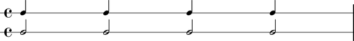

LilyPond provides an asterisk * operator to scale the durations of notes, rests, chords and skips by arbitrarily positive rational values.
LilyPond multipliers are inivisible and generate no typographic output of their own. However, while independent from the typographic output, LilyPond multipliers do factor in in calculations of duration and time.
Abjad implements LilyPond multpliers as the settable duration.multiplier attribute of notes, rests, chords and skips.
abjad> note = Note(0, (1, 4)) abjad> note.duration.multiplier = Rational(1, 2) abjad> note.duration.multiplier Rational(1, 2)
abjad> print(note.format) c'4 * 1/2
Abjad also implements a duration.multiplied attribute to examine the duration of a note, rest, chord or skip as affected by the multiplier (see _LeafDurationInterface for all other duration attributes available).
abjad> note.duration.multiplied Rational(1, 8)
LilyPond multipliers give the half notes here multiplied durations equal to a quarter note.
abjad> notes = Note(0, (1, 4)) * 4 abjad> multiplied_note = Note(0, (1, 2)) abjad> multiplied_note.duration.multiplier = Rational(1, 2) abjad> multiplied_notes = multiplied_note * 4 abjad> top = RhythmicStaff(notes) abjad> bottom = RhythmicStaff(multiplied_notes) abjad> staves = StaffGroup([top, bottom]) abjad> show(staves)
Abjad models multiplication fundamentally differently than prolation. See the chapter on prolation for more information.
The LilyPond multiplication
*operator differs from the Abjad multiplication*operator. LilyPond multiplication scales duration of LilyPond notes, rests, chords and skips. Abjad multiplication copies Abjad containers and leaves.